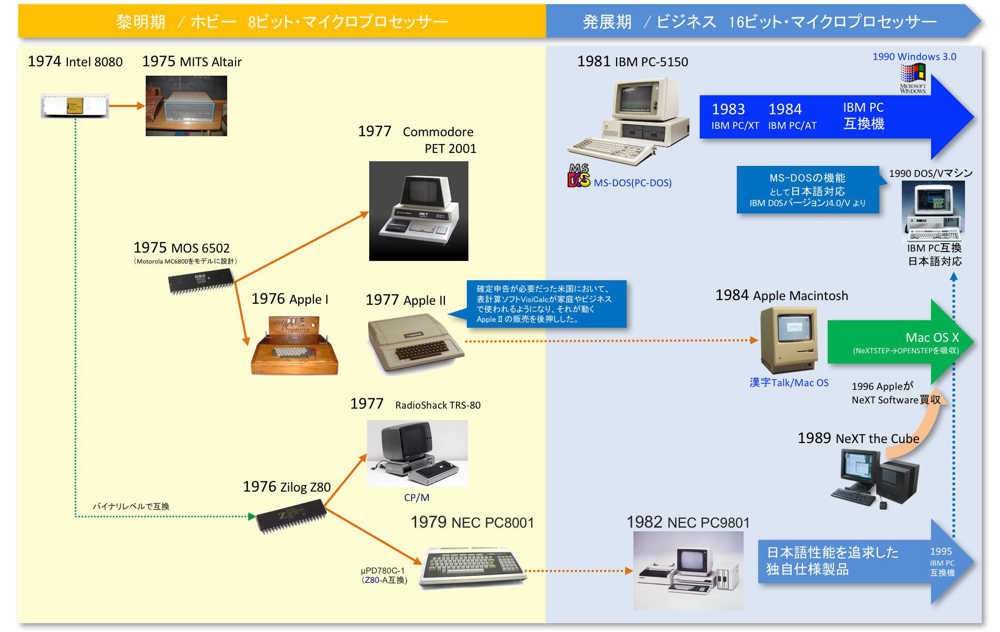
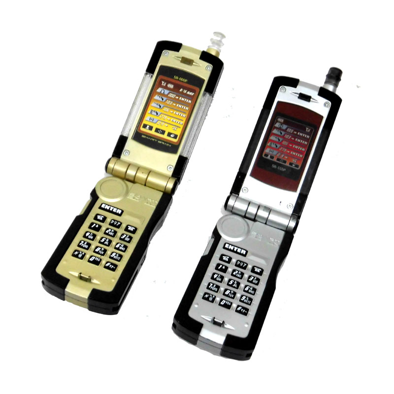
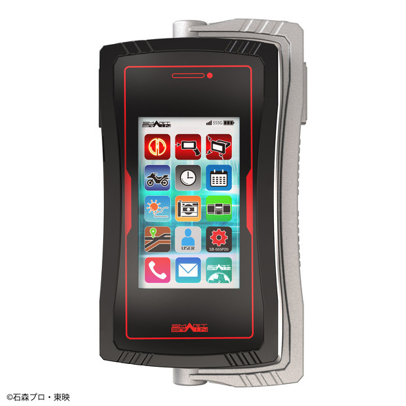
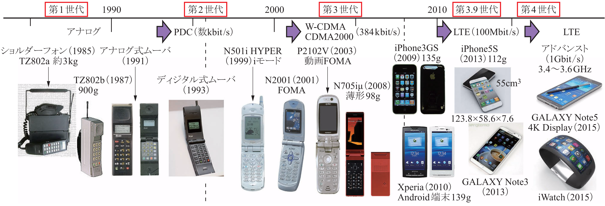
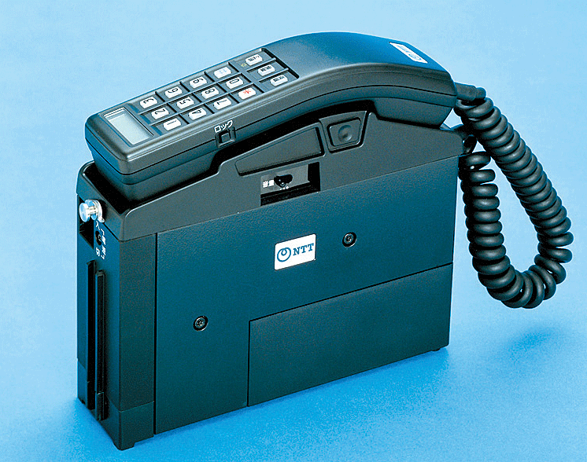
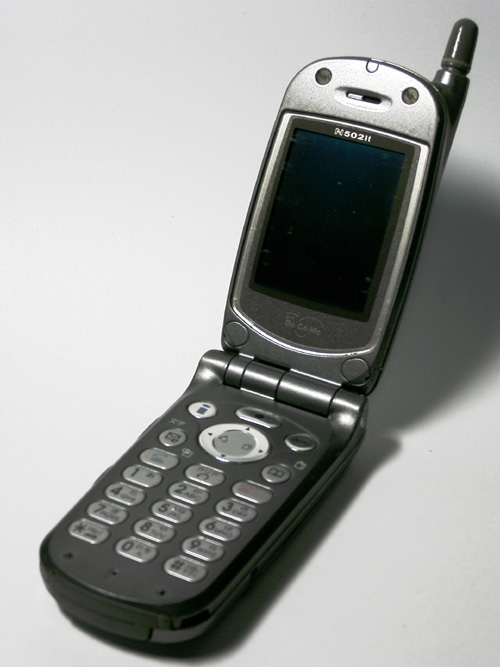
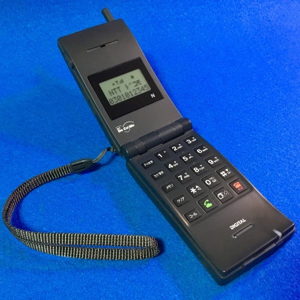
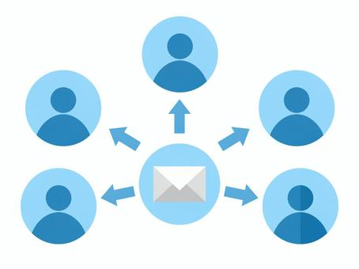
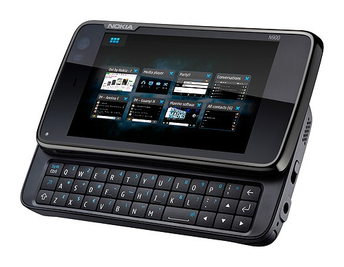

LIST
ITについて
- ITとは何か？
ITとは、「Information Technology」の頭文字をとった単語です。
パソコンやスマートフォンなどの情報技術の総称を意味します。
ITという単語はパソコン、インターネットを表すだけでなくセキュリティや情報処理なども含み広義的な意味で使われます。
ITの歴史
- PCの歴史について
まず初めにパーソナルコンピュータ（PC）について、パーソナルコンピュータ（PC）とは、 個人で使用するコンピュータであり、「個人が汎用目的で使うための、マイクロプロセッサを備え、一般的なソフトウェア（ワープロソフトやブラウザなど）を動かすために設計されたコンピュータ」といったものである。 パーソナルコンピュータが登場する以前、コンピュータといえば大型で、かつ高価だった。 購入や運用に巨額の費用が必要なので、それらは大企業や大学や研究所などが所有し、1台を、それら組織に所属する人々が共同で使用していた（タイムシェアリングシステム）。 この時代、個人が自分のためだけに購入して占有して使えるようなコンピュータは存在しなかった。 だがアメリカのインテルがマイクロプロセッサの開発に成功したことで、コンピュータを小型化および低価格化する道が開け、個人所有する可能性が開かれた。 PCをサイズや形状に焦点を当てて分類する場合、ノートPC（ラップトップPC）、デスクトップPC、タブレット型PC（スレートPC）などに分類できる。 今ではインターネットの普及とともにインターネットの情報アクセス端末としても利用されるようになりました。
PCの年表
1970年代、前文述べたようにコンピューターは企業や研究室の一室を占有するほど巨大で、大変高価なものであり、それを個人が所有し占有して使用することは困難な時代でした。
1974年、Intelの8ビットマイコンIntel8080が登場、1975年、これを搭載して個人向けに販売されたコンピューターが、Altair8800です。 ただ、Altair8800は、CRTモニタやキーボードは使えず、パネルについているスイッチをON/OFFして二進数でメモリを操作し、結果をLEDに表示させるといった単純な計算しかできない原始的なコンピューターでした。
1976年、AppleⅠが発売されます。この製品は、購入者が組立てる必要はありましたが、 Altair8800とは異なり、キーボードやCRTモニタ、記憶用のカセットテープ・ドライブも別途購入し追加すれば、様々な操作やプログラミングを楽しめるものでした。 AppleⅠは一定の成功を収め、翌年の1977年、世界で初めてキーボードや周辺機器も含め個人向けの完成品として作られたのがApple Ⅱです。 現在の「パーソナル・コンピューター（PC :Personal Computer）」の直接の先祖と言えるこのコンピューターは、ホビー用途だけではなく、確定申告が必要だった米国において、表計算ソフトVisiCalcが使えることから、 家庭やビジネスでも使われるようになり、AppleⅡの販売を後押しし大きな成功につながりました。
同年、CommodoreのPET2001、RadioShackのTRS-80といった製品も登場しています。我が国では、1979年、NECがPC-8001の販売をはじめています。
1981年、IBM Personal Computer 5150、略称「IBM PC」が登場します。 それまで主流であった8ビット・マイクロプロセッサーよりも高性能な16ビットのIntel 8088を、さらにマイクロソフトのOSであるMS-DOSを社外から調達することで開発期間を短縮し市場参入を早めました。 IBMはビジネス用途の大型コンピューターでは圧倒的なシェアを持っていたことから、ビジネス分野に広く受け入れられることとなり、大成功を収めました。 しかし、その後、IBM PC同様、IntelのマイクロプロセッサーとMS-DOSを採用した「IBM PC互換機」が登場し、その価格の安さもあってシェアを拡大、利益を確保できないIBMは2005年にPC事業をレノボに売却しています。 IBM PCおよびその互換機は、日本語対応という点においては課題も多く、NECが独自に日本語機能を強化したPC-9801を1982年に発売しました。
マイクロソフトのMicrosoft BASICをベースにした時代の終盤から、MS-DOS時代を経て、Microsoft Windowsの本格的な普及期まで約15年間、PC-98シリーズは販売が続けられ、 全盛期には日本国内シェア90%以上を獲得するほどの大成功を収めました。しかし、日本語に対応したIBM PCおよび互換機のためのMS-DOSとその製品仕様「DOS/V」が登場し、PC-98シリーズの差別化は難しくなり、NECもそちらに移行してゆきます。 AppleはAppleⅡ以降、大きな成功を収めるには至らなかったのですが、1984年に発売したMacintoshが成功しました。 その後、Appleから離れたジョブスが立ち上げたNeXT社（後にNext Software社）を1996年に買収、そのOSであるNeXTSTEP（後に、OPENSTEP）をMac OS に統合し機能を強化したMac OS Xをベースに品揃えを拡大、利用者を増やしてゆくことになります。
携帯電話とは、無線通信により、携帯することが可能となった電話機である。 また、電話機を携帯する形の移動体通信システム、電気通信役務。端末を「携帯」あるいは「ケータイ」と略称することがある。 携帯電話は無線機の一種であるため、その設計は各国の電波法により規制されている。 日本国内で一般に流通している携帯電話は、電波法令により規定されている技術基準に適合していることを示すマーク（技適マーク）が刻印されている。

年代
1985年頃、初期のアナログ式携帯電話は「ショルダーフォン」と呼ばれた肩掛け式で、重さが約3kgあった、 年表に携帯通信端末の変遷を示している。 
その約6年後の,1991年、TTドコモからムーバシリーズが発売され、 重さが300～400g程度まで軽くなり、持ち運び可能なサイズへと一気に小形化が進んだため本格的な普及が始まった。 
1993年にはディジタル方式の携帯電話のサービスが始まり、 
1997年頃からディジタル化によって周波数帯に余裕ができたことで、携帯からのテキスト送受信を可能にしたショートメールサービスが開始する。 ディジタル化によって電池の持ち時間も長くなり、携帯電話の体積が100cm3を切るようになって、サイズボリュームは競争軸の一つとなっていた。 
2000年頃に入ると第3世代の普及が始まり、インターネット接続が本格化。 機能面ではカメラが標準搭載され、画像や動画像のやり取りが可能になる、携帯電話の形状もキャンディーバー形と呼ばれた画面とボタンが同一面に配置されたものから、 画面の大形化に伴い折り畳み形が主流になる。 サイズ競争を行っていた第2世代から一転、機能競争へシフトし、50cm3まで小形化していた携帯電話のサイズは150cm3程度まで大形化する。
そんな中、2003年にNECが海外市場向けに発売したのがN900と呼ばれるカード形携帯電話で、カメラなど基本機能はそのままに、体積を一気に40cm3まで小形化している。 機能面で大幅な進化を遂げた携帯電話が、小形化とデザインに各社の競争軸が移っていた。 
2007年以降、iPhone発売によって、ソフト競争に置き換わる。 機能を充実しながら小形化を含めた端末のデザインで工夫を凝らすだけでは勝てなくなり、日本のメーカは苦戦を強いられる。 iPhoneの大きな画面に直接タッチするUI（ユーザインタフェース）は国内でもかなり検討と開発を重ねていたが、 画面に直接触れることの抵抗感からペンが必要であるとか、従来型のキーのようなクリック感が必要であるとか、 なかなか採用に踏み切れないでいたのだ。それがいとも簡単に普及していく様は、開発者にしてみれば衝撃としか言いようがない。 それでも何とか特徴を出そうと、NECでは2画面タイプのスマートフォンを開発している。 だが、iPhoneに代表される大画面とタッチパネルのUIという基本構造が変わらない中での製品開発競争では、 もはやデバイス機能での差別化とそれを組み合わせるソフト面の差別化が中心であり、iOS対Android＋デバイス機能の競争となり、 スマートフォン業界の世界的な流れはApple社とSamsung社の一騎打ちに中国メーカが台頭するなど大きく変わってきている。
まとめ
- この記事を通して最後に…
皆さんには、この記事を通してITやITの歴史について少しでも興味を持ってもらえれば幸いです。 またこの記事を通して私自身ITに関して多くの知識を得ることが出来てとても有意義な経験になりました。